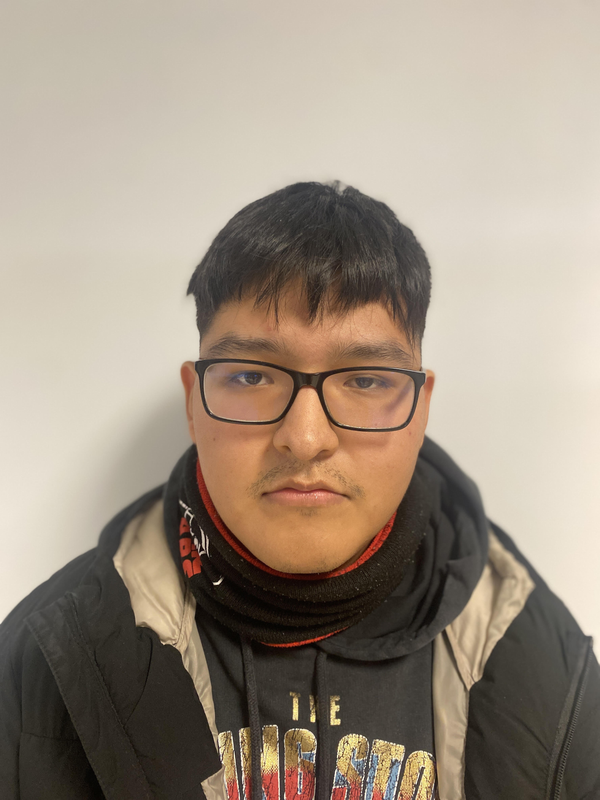
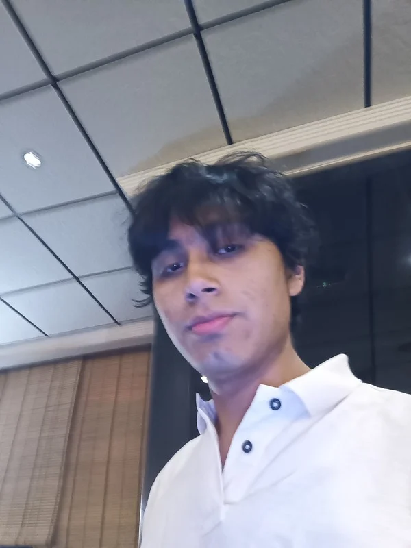
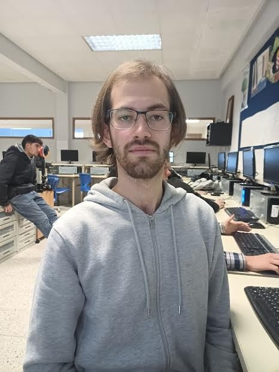
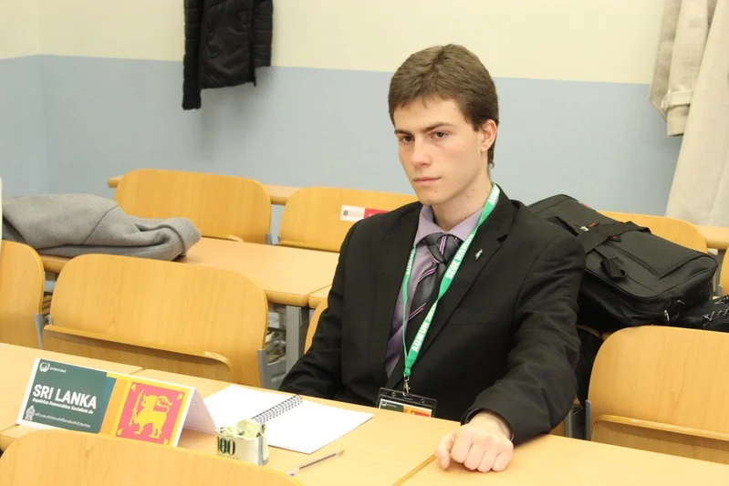

¿Quiénes somos?
Directora General
YAHAIRA
Master en Administración de Empresas. La Directora del proyecto, gestiona la relación con promotores e "inluencers" para suplir a la expansión del proyecto. Coordina con el departamento de gestión y finanzas sobre el precio de las entradas.Administración y Finanzas
OLIVER ISAIAS COLQUE BLAS
Titulado en Finanzas y Dirección de Empresas. Nuestro Gestor financiero encargado del presupuesto y gestion de ingresos, además del encargado de la Logística del local y de la contratación de personal (RRHH).
Contenido y Exibiciones
GERARDO ISAIAS BRAVO MARTINEZ
Titulado en Museología y GS Administración de Sistemas Informaticos. Encargado de la Curaduría de la colección, gestor de las exposiciones interactivas del museo, de los objetos prestados por el museo y encargado del bienestar de los materiales expuestos.
Area Educativa y Talleres
NICOLAS ARROYO ORTEGA
Titulado en Magisterio y Master en Formación del Profesorado. Encargado del diseño de cursos y talleres, coordinación de aulas y contacto para relación con centros educativos.
Tecnología y Mantenimiento
Marcos Santos Piñeiro
Titulado en Ingeniería Informatica. Encargado del mantenimiento y correcto funcionamiento de los equipos del centro, gestor del protocolo de Residuos de Aparatos Eléctricos y Electrónicos (RAEE), de la infraestructura IT y supervisor de la eficiencia energética.